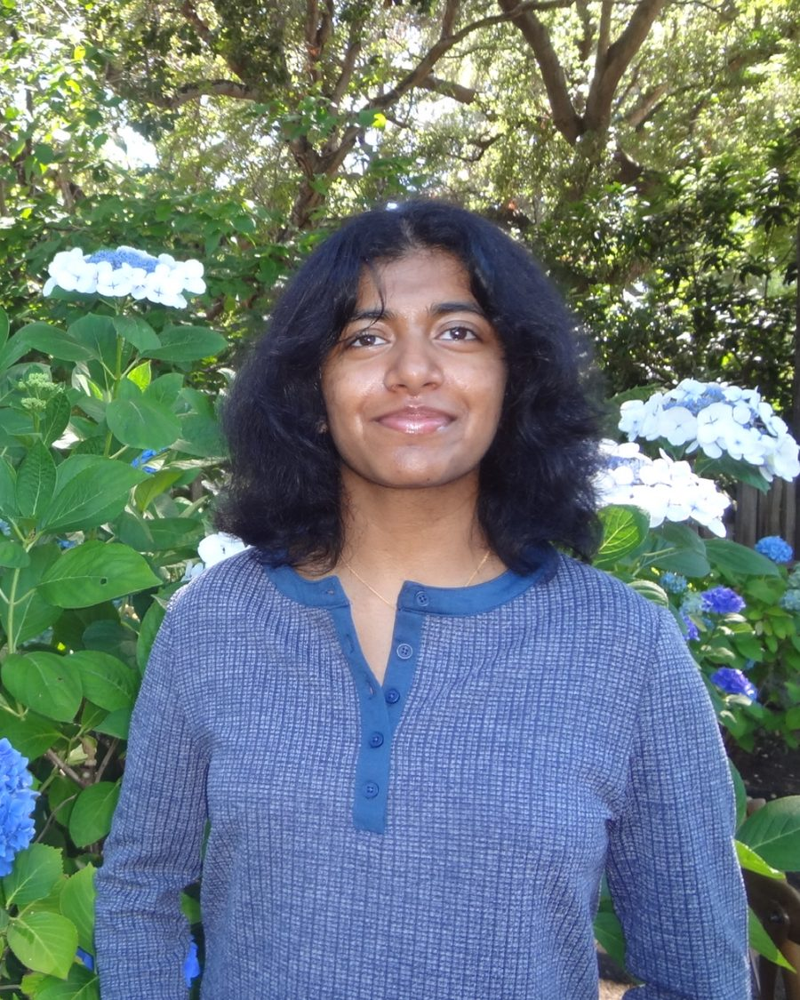

clk
stateIDLEFETCHEXECFETCHEXECRET
lane0LDRADD
lane1LDRADD
lane2LDRADD
lane3maskedmasked
Computer Engineering + Applied Math · UC Santa Cruz
I build things where software meets silicon: a GPU core in Verilog, CUDA kernels, and AI inference systems.

I'm a second-year Computer Engineering student minoring in Applied Mathematics at UC Santa Cruz. I like GPUs: how they are designed, how they schedule work across thousands of threads, and how to write code that runs fast on them.
Most of my projects link software and hardware. I've written a small four-lane GPU core in Verilog, tuned CUDA kernels with machine learning, and benchmarked inference on NVIDIA and AMD accelerators.
Away from the keyboard I paint, play basketball and piano, and take photos. I also like picking up skills that have nothing to do with school, mostly to see how they work.
| Degree | B.S. Computer Engineering, UC Santa Cruz Minor: Applied Mathematics Expected June 2029. |
|---|---|
| Languages | |
| Interests | |
| RTL + EDA | |
| GPU compute | |
| ML + infra | |
| Honors | Dean's List, Winter 2026 and Summer 2026. Machine Learning Specialization, DeepLearning.AI and Stanford. |
Select a project to read the full write-up and open its code.
"Turn on the kitchen lights"
{ "intent": "device_control",
"action": "turn_on",
"device": "light",
"location": "kitchen" }
Dec 2025 to present
Researcher, Generative AI & Idea Prototyping Team
Fall 2026
AI Agentic Engineer Intern
Wildlife, waterfronts and buildings. Select a photo to view it larger.
I'm looking for chances to work on GPU design and verification and GPU computing. Reach me on LinkedIn, see what I'm building on GitHub, or read what I'm learning on my Medium blog.
A GPU-style core written from scratch in Verilog. One instruction runs across four lanes, each on its own data. It has a three-state scheduler, a decoder, per-lane register files and ALUs, shared memory, thread masking, and an 8-instruction set with a Python assembler. It runs vector add, subtract and multiply kernels.
View code on GitHubone instruction, broadcast to every lane
thread mask gates every write
The same instruction goes to four lanes at once. Each lane keeps its own 16 registers, three of them read-only (block index, block size, thread index), so identical code works on different data. That is the core idea behind how a real GPU runs a kernel.
Where the 10,711 synthesized cells go
Next on the roadmap
Machine learning picks the fastest tile size for a CUDA tiled matmul kernel, replacing brute-force search. I benchmarked 190+ configurations on a T4 and trained XGBoost and a PyTorch MLP on the results.
View code on GitHubA ResNet-18 inference study across two vendors: TensorRT FP16 and INT8 on an NVIDIA T4, torch.compile on an AMD MI300X, and a handwritten Triton normalization kernel. The kernel was faster alone but gave no end-to-end gain, which was the useful lesson.
View code on GitHubA reproducible PyTorch benchmarking tool for training throughput, built toward measuring GPU energy per sample. A telemetry layer keeps the runner independent of any one hardware monitor. It has a CLI, batch-size sweeps, Docker and CI.
View code on GitHubPredicts Formula 1 podium probabilities from qualifying data. A Random Forest trained on the 2018 to 2024 seasons and tested on 2025, served by FastAPI behind a plain HTML, CSS and JavaScript dashboard.
View code on GitHub"Turn on the kitchen lights"
{ "intent": "device_control",
"action": "turn_on",
"device": "light",
"location": "kitchen" }
A Transformer trained from scratch in PyTorch that turns commands like "turn on the kitchen lights" into structured, validated device actions. The FastAPI foundation is in place. The dataset, model, and deployment are still to come.
View code on GitHub